Катон (Kathon CG) – консервант химического происхождения, использующийся в косметической промышленности.
В его состав входят метилхлоризотиазолинон и метилизотиазолинон, производные изотиазолона.
Бытует мнение, что данный консервант чрезвычайно вреден и даже способен вызывать рак.
Однако, научных данных, подтверждающих точку зрения о том, что все настолько плохо
– не существует.
Катон разрешен к использованию во всех странах мира, включая Соединенные Штаты Америки и Японию.
А последняя известна строгостью своей политики в отношении безопасности косметики.
Цель: изучение влияния различных бактерицидных концентраций фенола на плазму крови КРС.
Задачи:
- Подготовить инкубационные среды с концентрациями дезинфектанта: 0,02 %; 0,1 %; 0,2 %; 0,6%.
- Проведение инкубации плазмы КРС в различных концентрациях ЧАС А. Рабочие концентрации дезинфектанта:
0,01%
0,05%
0,1%
0,3%
- Оценка кинетики денатурации белка в образцах с течением времени
- Оценка изменения мутности в образцах после удаления денатурированных белков
- Проведение электрофоретического анализа спектра белков образцов (конечных и промежуточных)
Схема эксперимента
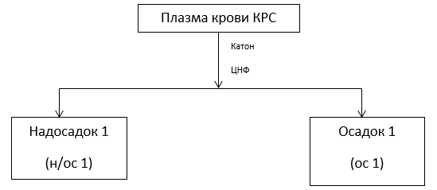
- Разморозили 60 мл плазмы
- Центрифугировали 10 мин 4200 g
- Измерили мутность, цветность, концентрацию белка
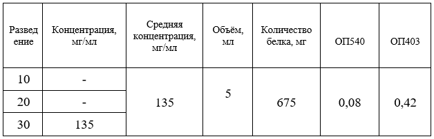
- Приготовили инкубационные среды
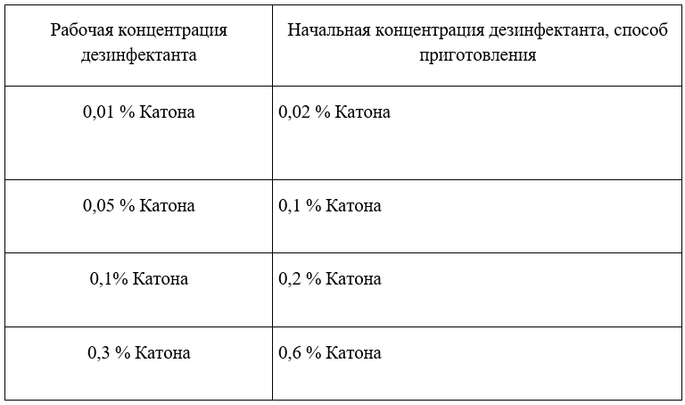
- Разделили плазму на 5 групп, соответствующих каждому раствору катона + контрольный образец
1 группа – 0,01 % Катона, 2 группа – 0,05 % Катона
3 группа – 0,1 % Катона. 4 группа – 0,3 % Катона
5 группа – контроль
- Добавили струйно медленно при перемешивании растворы из табл. 2 в соответствующие им группы плазмы.
5 мл плазмы + 5 мл инкубационной среды
- Контроль: 5 мл плазмы + 5 мл физ. р-ра
- Каждую группу разделили на 2 части по 5 мл, соответствующих каждому дню анализов. Общее количество образцов – 10
- Никаких наблюдаемых эффектов не наблюдалось
- Перемешали пробы 10 минут. Измерили мутность и цветность образцов
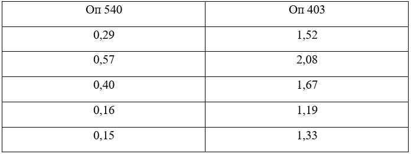
Эксперимент №1
Оставили на инкубацию при комнатной температуре на 1 день
Температура: 24 °С
- Перемешали пробу
- Измерили мутность
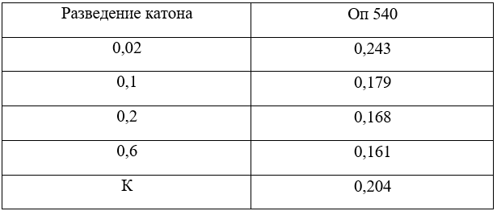
- Центрифугировали 4200g 15 мин
- Измерили мутность, цветность. В случае выпадения осадка, измерили мутность, цветность надосадка
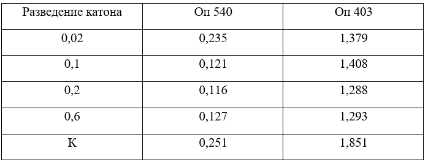
- Измерили объём надосадков. Измерили концентрацию белка
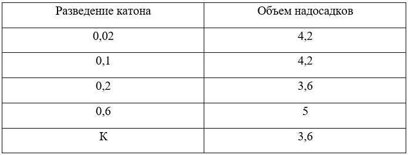
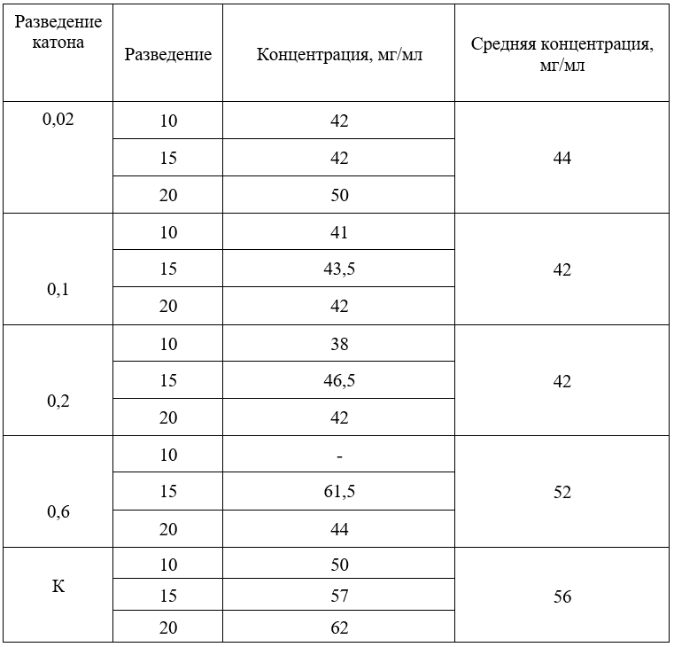
- Измерили массу осадков
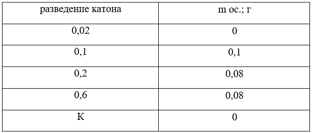
Масса осадков очень мала, растворить его и использовать в дальнейшем невозможно.
- Все образцы н/ос. (по 1000мкл) отобрали на электрофорез
- Провели электрофорез
Распределение общего белка
Сводная таблица
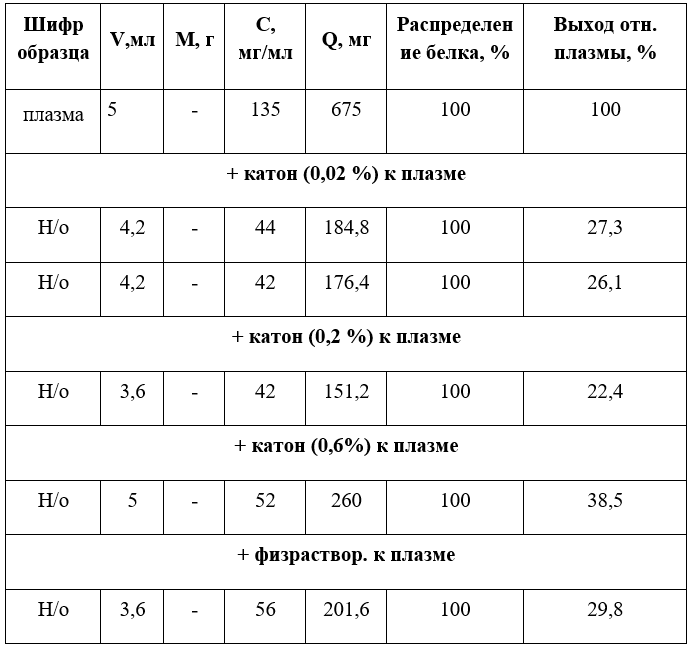
Результаты электрофореза
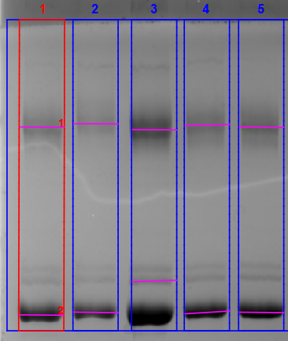
- 0,02К
- 0,1К
- 0,2К
- 0,6К
Процентное содержание гамма-глобулиновой и альбуминовой фракции в образцах
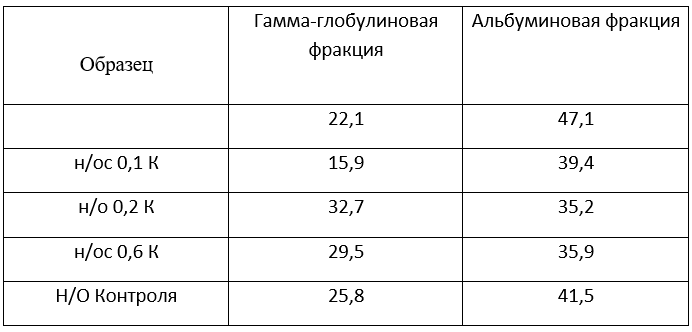
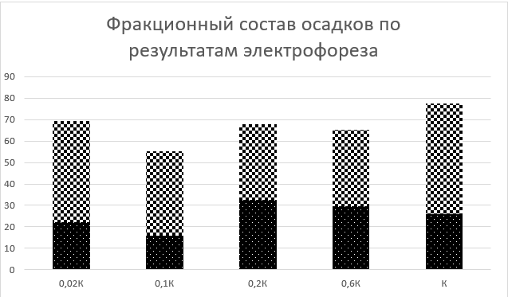
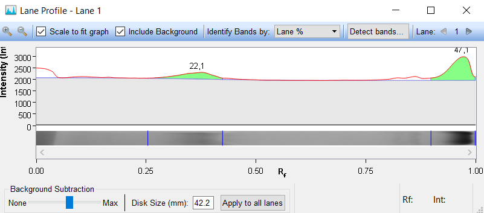
электрофореграмма 0,02К
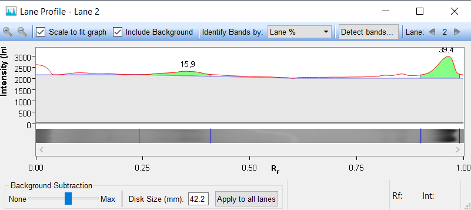
электрофореграмма 0,1К
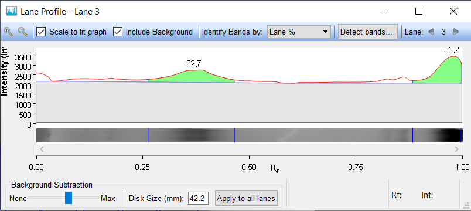
электрофореграмма 0,2К
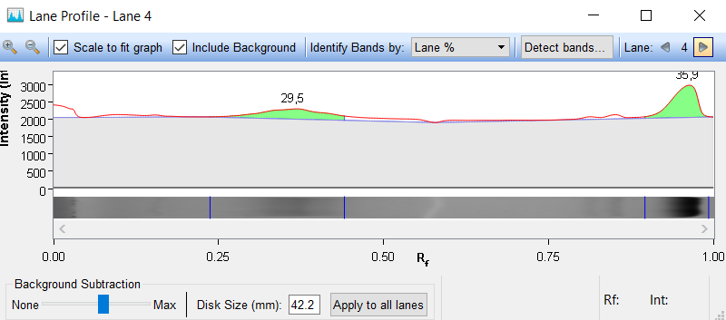
электрофореграмма 0,6К
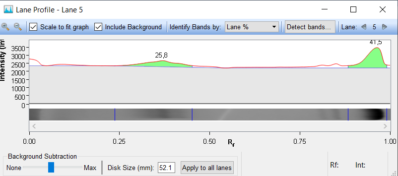
электрофореграмма контроля
Фенол
Домой